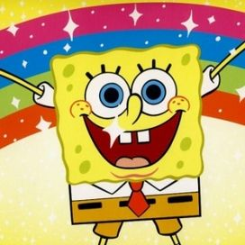
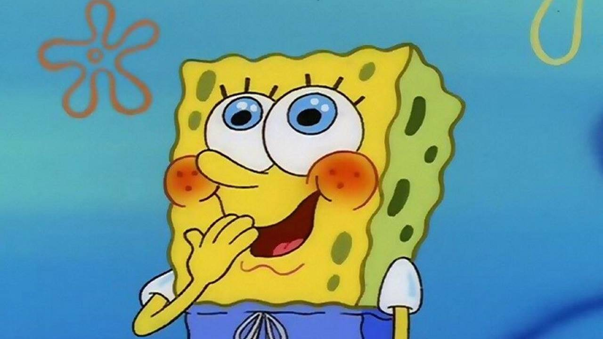
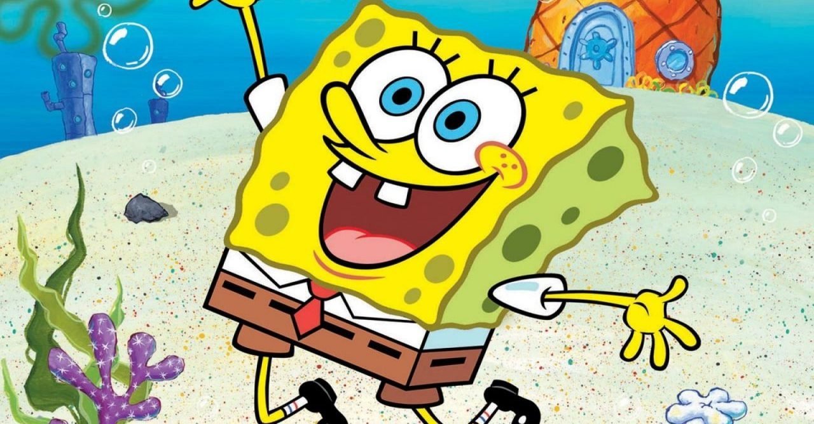
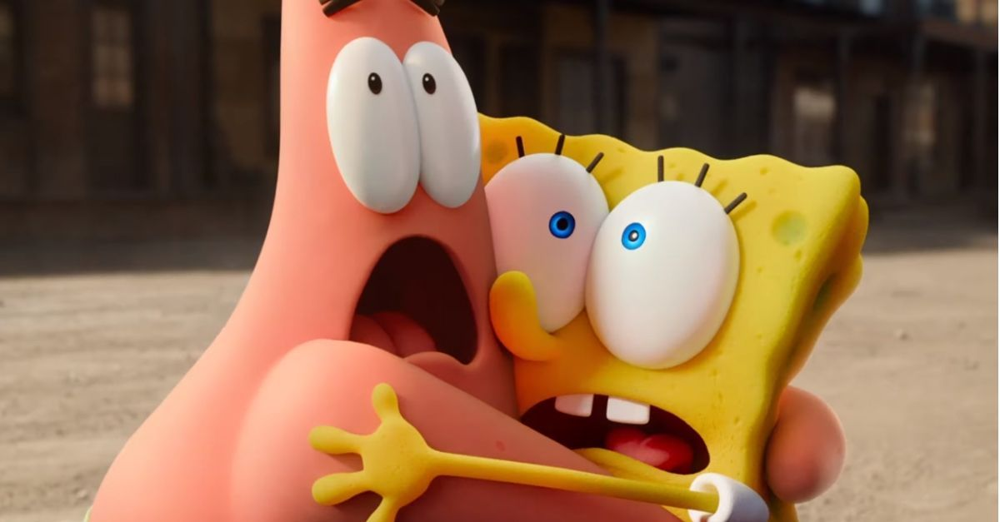

Bob Esponja Calça Quadrada. O que talvez você não saiba, é que o desenho animado já está completando 22 anos. A animação foi lançada em 1º de maio de 1999 e, com muita alegria e personagens marcantes, conquistou uma geração de telespectadores, que cresceram e, mesmo adultos, continuam fãs. Todos esses 22 anos de história nas telinhas faz com que o personagem amarelo tenha muita coisa pra ensinar. Pensando nisso, separamos três dessas lições que vão ajudar você a levar a vida de forma mais leve.
Bob Esponja foi criado pelo biólogo marinho e animador Stephen Hillenburg. Os primeiros rascunhos do desenho ele começou a fazer em 1984, quando dava aulas de biologia marinha no Instituto Ocean, na Califórnia. Mas os traços mais conhecidos do personagem principal, com a famosa calça quadrada, só surgiram anos depois.

Se tem uma coisa que o Bob Esponja é, é positivo. Não importa se ele está acordando cedo numa segunda-feira ou se tem que fazer hora extra na sexta-feira. Ele sempre encara com positividade qualquer situação e não tira o sorriso do rosto. E aí entra mais um atribut

O Bob Esponja é extremamente dedicado ao trabalho no Siri Cascudo. Ele é o funcionário do mês que todo chefe quer. Tudo bem que não tem muito com quem ele competir, né? Afinal, o Lula Molusco é carregado de preguiça e desânimo. Mas o Bob, como um bom colega de trabalho, não se afeta com isso e sempre tenta incentivar o atendente de caixa. Sim! Mais uma qualidade do personagem.

O melhor amigo dele, o Patrick Estrela, é um verdadeiro sortudo em ter um colega como Bob Esponja. Nos momentos de diversão e brincadeira, o Bob sempre leva alegria. E nas enrascadas, adivinha quem também está lá? O felizão amarelinho da calça quadrada. E ele dá tanto valor à amizade que é capaz de rodar toda a Fenda do Biquíni para encontrar o Gary, seu bichinho de estimação (e melhor companhia).